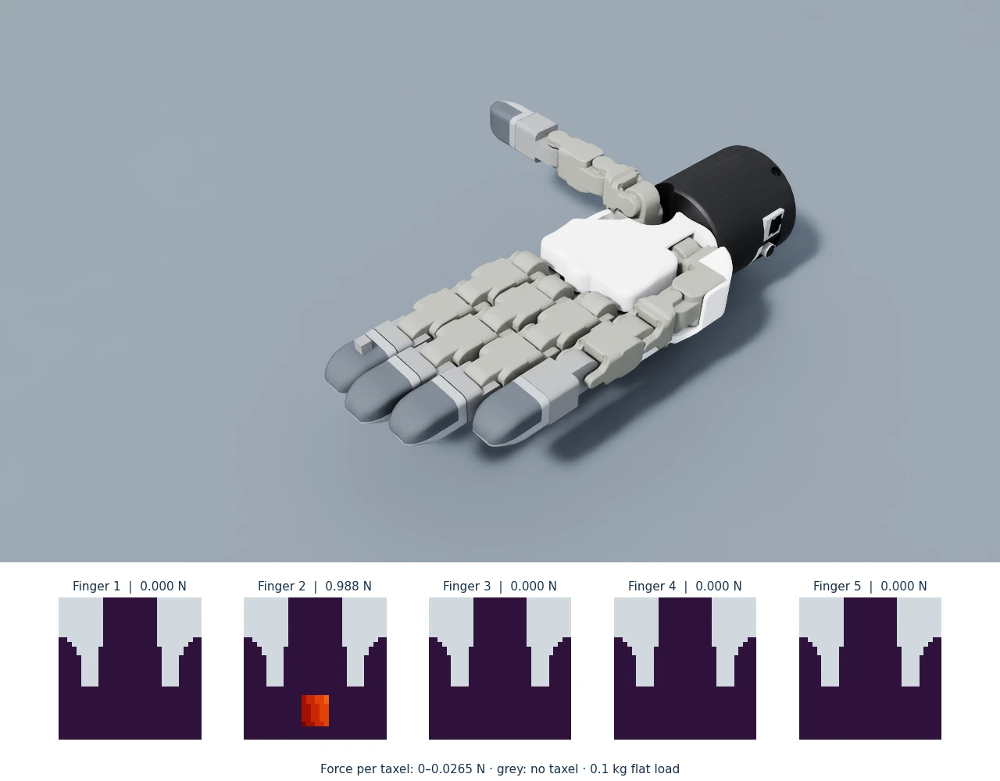

DEX-01 Tactile Sensor
Simulate normal contact forces on DEX-01 sensors in NVIDIA Isaac Lab: the 740-sample humanoid fingertip or the 1,024-sample rectangular Robotiq finger. Both provide 32 × 32 tactile images.


A 0.1 kg cube contacts finger 2 on the Tesollo DG-5F hand. Each panel reports physical normal force in newtons using the original row/column mapping.
Browse the visual examples to see contact and articulation before setting up a scene.
Start with installation, then run your first simulation. For integration, see attaching the sensor and the API reference.
From contact to physical force
Each tactile frame reports normal force in newtons. A 0.1 kg fixture under 9.81 m/s² gravity should produce 0.981 N; the validation workflow checks this against independently filtered PhysX forces and momentum balance. See how contact is modeled and its supported model behavior.
Get started
Examples
Concepts and reference
Validation and support